pacman::p_load(sf,tmap,tidyverse)Hands-on_Ex08
Choropleth Mapping
Importing Geospatial Data into R
mpsz <- st_read(dsn= "data/geospatial",
layer = "MP14_SUBZONE_WEB_PL")Reading layer `MP14_SUBZONE_WEB_PL' from data source
`C:\Users\Tina\Documents\SMU\Term 2\Visual analytics\yenyunhsuan\Visual_Analysis\Hands-on_Ex\Hands-on_Ex08\data\geospatial'
using driver `ESRI Shapefile'
Simple feature collection with 323 features and 15 fields
Geometry type: MULTIPOLYGON
Dimension: XY
Bounding box: xmin: 2667.538 ymin: 15748.72 xmax: 56396.44 ymax: 50256.33
Projected CRS: SVY21mpszSimple feature collection with 323 features and 15 fields
Geometry type: MULTIPOLYGON
Dimension: XY
Bounding box: xmin: 2667.538 ymin: 15748.72 xmax: 56396.44 ymax: 50256.33
Projected CRS: SVY21
First 10 features:
OBJECTID SUBZONE_NO SUBZONE_N SUBZONE_C CA_IND PLN_AREA_N
1 1 1 MARINA SOUTH MSSZ01 Y MARINA SOUTH
2 2 1 PEARL'S HILL OTSZ01 Y OUTRAM
3 3 3 BOAT QUAY SRSZ03 Y SINGAPORE RIVER
4 4 8 HENDERSON HILL BMSZ08 N BUKIT MERAH
5 5 3 REDHILL BMSZ03 N BUKIT MERAH
6 6 7 ALEXANDRA HILL BMSZ07 N BUKIT MERAH
7 7 9 BUKIT HO SWEE BMSZ09 N BUKIT MERAH
8 8 2 CLARKE QUAY SRSZ02 Y SINGAPORE RIVER
9 9 13 PASIR PANJANG 1 QTSZ13 N QUEENSTOWN
10 10 7 QUEENSWAY QTSZ07 N QUEENSTOWN
PLN_AREA_C REGION_N REGION_C INC_CRC FMEL_UPD_D X_ADDR
1 MS CENTRAL REGION CR 5ED7EB253F99252E 2014-12-05 31595.84
2 OT CENTRAL REGION CR 8C7149B9EB32EEFC 2014-12-05 28679.06
3 SR CENTRAL REGION CR C35FEFF02B13E0E5 2014-12-05 29654.96
4 BM CENTRAL REGION CR 3775D82C5DDBEFBD 2014-12-05 26782.83
5 BM CENTRAL REGION CR 85D9ABEF0A40678F 2014-12-05 26201.96
6 BM CENTRAL REGION CR 9D286521EF5E3B59 2014-12-05 25358.82
7 BM CENTRAL REGION CR 7839A8577144EFE2 2014-12-05 27680.06
8 SR CENTRAL REGION CR 48661DC0FBA09F7A 2014-12-05 29253.21
9 QT CENTRAL REGION CR 1F721290C421BFAB 2014-12-05 22077.34
10 QT CENTRAL REGION CR 3580D2AFFBEE914C 2014-12-05 24168.31
Y_ADDR SHAPE_Leng SHAPE_Area geometry
1 29220.19 5267.381 1630379.3 MULTIPOLYGON (((31495.56 30...
2 29782.05 3506.107 559816.2 MULTIPOLYGON (((29092.28 30...
3 29974.66 1740.926 160807.5 MULTIPOLYGON (((29932.33 29...
4 29933.77 3313.625 595428.9 MULTIPOLYGON (((27131.28 30...
5 30005.70 2825.594 387429.4 MULTIPOLYGON (((26451.03 30...
6 29991.38 4428.913 1030378.8 MULTIPOLYGON (((25899.7 297...
7 30230.86 3275.312 551732.0 MULTIPOLYGON (((27746.95 30...
8 30222.86 2208.619 290184.7 MULTIPOLYGON (((29351.26 29...
9 29893.78 6571.323 1084792.3 MULTIPOLYGON (((20996.49 30...
10 30104.18 3454.239 631644.3 MULTIPOLYGON (((24472.11 29...popdata <- read_csv("data/aspatial/respopagesextod2011to2020.csv")Rows: 984656 Columns: 7
── Column specification ────────────────────────────────────────────────────────
Delimiter: ","
chr (5): PA, SZ, AG, Sex, TOD
dbl (2): Pop, Time
ℹ Use `spec()` to retrieve the full column specification for this data.
ℹ Specify the column types or set `show_col_types = FALSE` to quiet this message.glimpse(popdata)Rows: 984,656
Columns: 7
$ PA <chr> "Ang Mo Kio", "Ang Mo Kio", "Ang Mo Kio", "Ang Mo Kio", "Ang Mo K…
$ SZ <chr> "Ang Mo Kio Town Centre", "Ang Mo Kio Town Centre", "Ang Mo Kio T…
$ AG <chr> "0_to_4", "0_to_4", "0_to_4", "0_to_4", "0_to_4", "0_to_4", "0_to…
$ Sex <chr> "Males", "Males", "Males", "Males", "Males", "Males", "Males", "M…
$ TOD <chr> "HDB 1- and 2-Room Flats", "HDB 3-Room Flats", "HDB 4-Room Flats"…
$ Pop <dbl> 0, 10, 30, 50, 0, 0, 40, 0, 0, 10, 30, 60, 0, 0, 40, 0, 0, 10, 30…
$ Time <dbl> 2011, 2011, 2011, 2011, 2011, 2011, 2011, 2011, 2011, 2011, 2011,…Data preparation
YOUNG: age group 0 to 4 until age groyup 20 to 24,
ECONOMY ACTIVE: age group 25-29 until age group 60-64,
AGED: age group 65 and above,
TOTAL: all age group, and
DEPENDENCY: the ratio between young and aged against economy active group
By using:
pivot_wider() of tidyr package, andmutate(), filter(), group_by() and select() of dplyr package
popdata2020 <- popdata %>%
filter(Time == 2020) %>%
group_by(PA,SZ,AG) %>%
summarise(Pop = sum(Pop),.groups = "drop") %>%
pivot_wider(names_from = AG,values_from = Pop) %>%
mutate(YOUNG = rowSums(.[3:6])+rowSums(.[12])) %>%
mutate('ECONOMY ACTIVE' = rowSums(.[7:11])+rowSums(.[13:15])) %>% mutate('AGED' = rowSums(.[16:21])) %>%
mutate('TOTAL' = rowSums(.[3:21])) %>%
mutate(`DEPENDENCY` = (`YOUNG` + `AGED`)
/`ECONOMY ACTIVE`) %>%
select(`PA`, `SZ`, `YOUNG`,
`ECONOMY ACTIVE`, `AGED`,
`TOTAL`, `DEPENDENCY`)Convert the values in PA and SZ fields to uppercase
- mutate_at: apply transformation to multiple columns
- .vars: specify the columns needed to be transformed
- funs: transformation columns apply to selected columns
popdata2020 <- popdata2020 %>%
mutate_at(.vars = vars(PA, SZ),
.funs = list(toupper)) %>%
filter(`ECONOMY ACTIVE` > 0)left_join() of dplyr package is used with mpsz data frame as the left data table
mpsz_pop2020 <- left_join(mpsz,popdata2020,
by = c("SUBZONE_N" = 'SZ'))Save to rds (r object) file
write_rds(mpsz_pop2020, "data/rds/mpszpop2020.rds")Choropleth Mapping Geospatial Data Using tmap
Plotting a thematic map quickly by using qtm().
tmap_mode() with “plot” option is used to produce a static map. For interactive mode, “view” option should be used.
fill argument is used to map the attribute (i.e. DEPENDENCY)
tmap_mode('plot')tmap mode set to plottingqtm(mpsz_pop2020, fill = "DEPENDENCY")
Creating by using tmap’s elements
tm_borders: line on each state of the map
tm_compass: direction (north) sign
tm_scale_bar(): distance size sign
tm_shape(mpsz_pop2020)+
tm_fill("DEPENDENCY",
style = "quantile",
palette = "Blues",
title = "Dependency ratio") +
tm_layout(main.title = "Distribution of Dependency Ratio by planning subzone",
main.title.position = "center",
main.title.size = 1.2,
legend.height = 0.45,
legend.width = 0.35,
frame = TRUE) +
tm_borders(alpha = 0.5) +
tm_compass(type="8star", size = 0.5)+
tm_scale_bar(text.size = 0.5)+
tm_grid(alpha = 0.2)+
tm_credits("Source: URA, DOS",
position = c("left", "bottom"))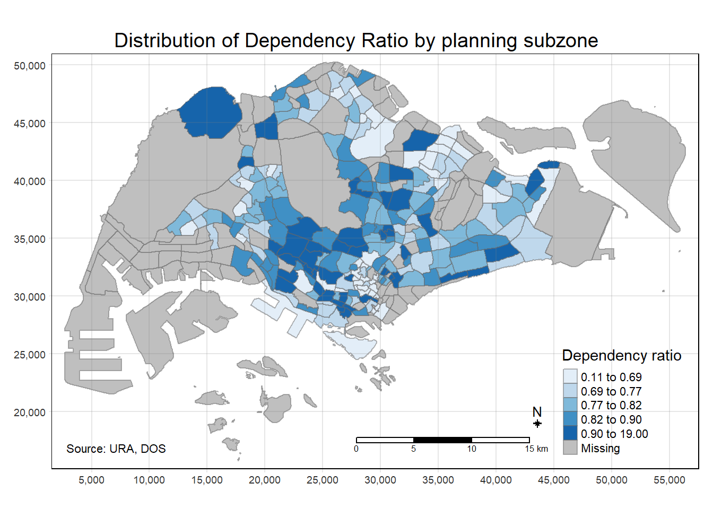
tm_shape() is used to define the input data (i.e mpsz_pop2020)
tm_polygons() is used to draw the planning subzone polygons
tm_shape(mpsz_pop2020)+
tm_polygons('DEPENDENCY')
tm_polygons() is a wraper of tm_fill() and tm_border()
tm_fill() shades the polygons by using the default colour scheme
tm_borders() adds the borders of the shapefile onto the choropleth map:
col = border colour,
lwd = border line width. The default is 1, and
lty = border line type. The default is “solid”
tm_shape(mpsz_pop2020)+
tm_fill('DEPENDENCY')+
tm_borders(col = 'gray',lwd = 1, alpha = 1)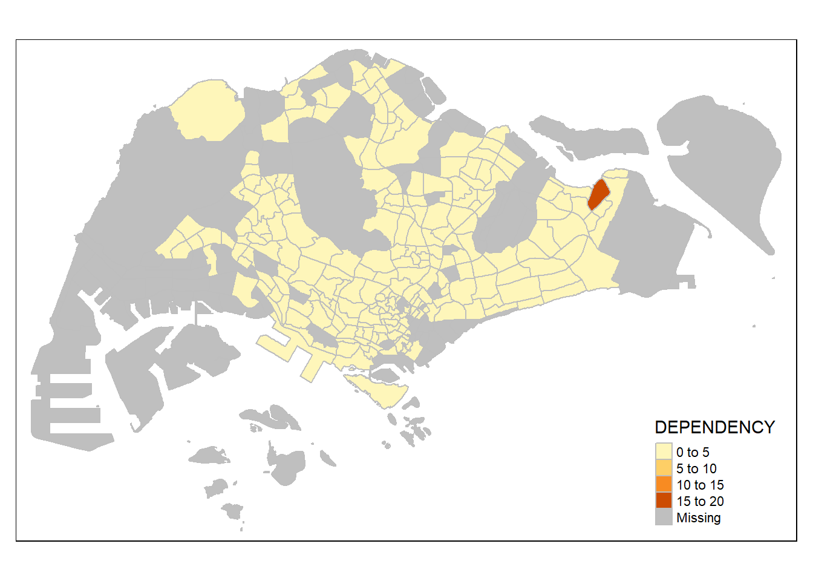
Classification method
tmap provides a total ten data classification methods, namely: fixed, sd, equal, pretty (default), quantile, kmeans, hclust, bclust, fisher, and jenks
tm_shape(mpsz_pop2020)+
tm_fill('DEPENDENCY',
n=5,
style = 'jenks')+
tm_borders(alpha = 1)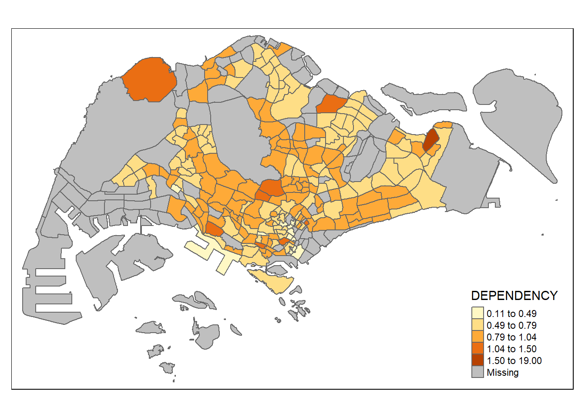
Plotting choropleth map with custome break
the breakpoints can be set explicitly by means of the breaks argument to the tm_fill(). In tmap the breaks include a minimum and maximum. As a result, in order to end up with n categories, n+1 elements must be specified in the breaks option (the values must be in increasing order).
Before we get started, it is always a good practice to get some descriptive statistics on the variable before setting the break points.
summary(mpsz_pop2020$DEPENDENCY) Min. 1st Qu. Median Mean 3rd Qu. Max. NA's
0.1111 0.7147 0.7866 0.8585 0.8763 19.0000 92 tm_shape(mpsz_pop2020)+
tm_fill('DEPENDENCY',
breaks = c(0, 0.60, 0.70, 0.80, 0.90, 1.00))+
tm_borders(alpha = 1)Warning: Values have found that are higher than the highest break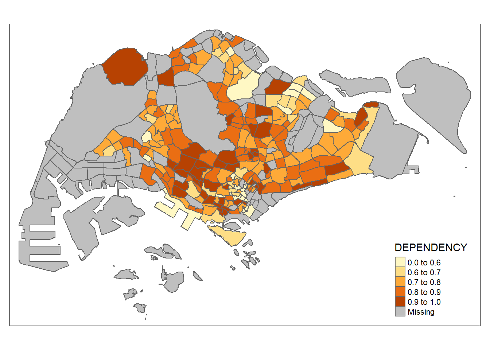
Using ColourBrewer palette
tm_shape(mpsz_pop2020)+
tm_fill('DEPENDENCY',
n = 6,
style = 'quantile',
palette = "Blues")+
tm_borders(alpha = 1)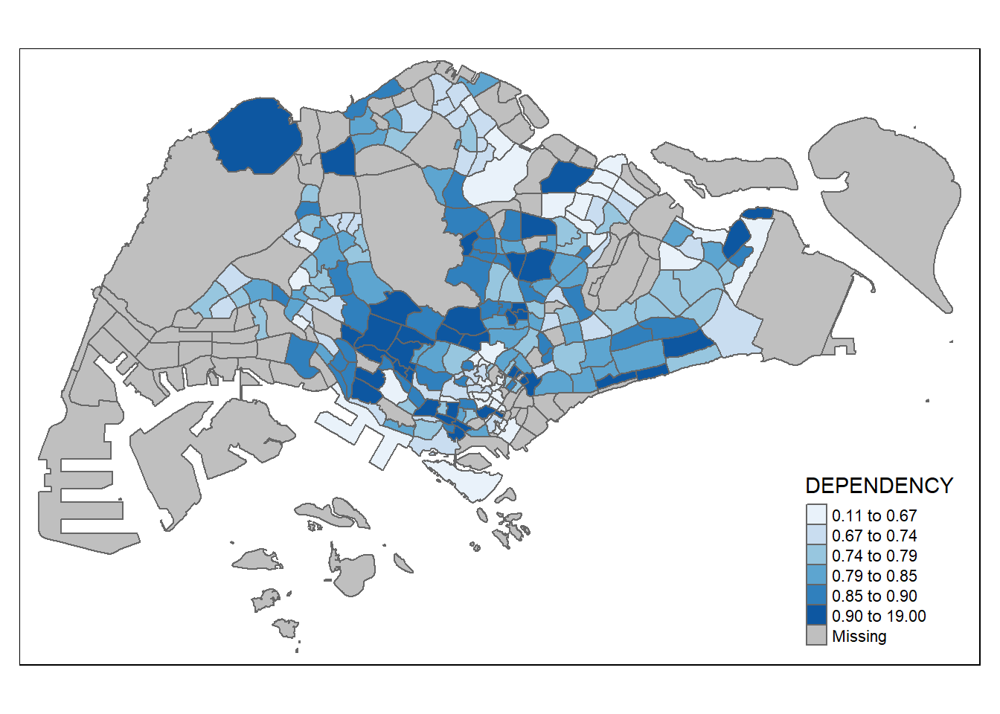
To reverse the colour shading, add a “-” prefix.
tm_shape(mpsz_pop2020)+
tm_fill('DEPENDENCY',
n = 6,
style = 'quantile',
palette = "-Greens")+
tm_borders(alpha = 1)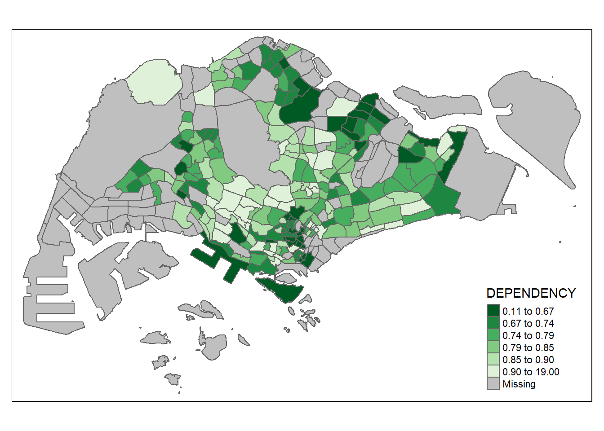
Adjust map layout
Legend as histogram
tm_shape(mpsz_pop2020)+
tm_fill('DEPENDENCY',
n = 6,
style = 'jenks',
palette = "-Greens",
legend.hist = TRUE,
legend.is.portrait = TRUE,
legend.hist.z = 0.1)+
tm_borders(alpha = 1)+
tm_layout(main.title = "Distribution of Dependency Ratio by planning subzone",
main.title.position = "center",
main.title.size = 1.2,
legend.height = 0.4,
legend.width = 0.35,
legend.outside = FALSE,
legend.position = c('right','bottom'),
frame = FALSE)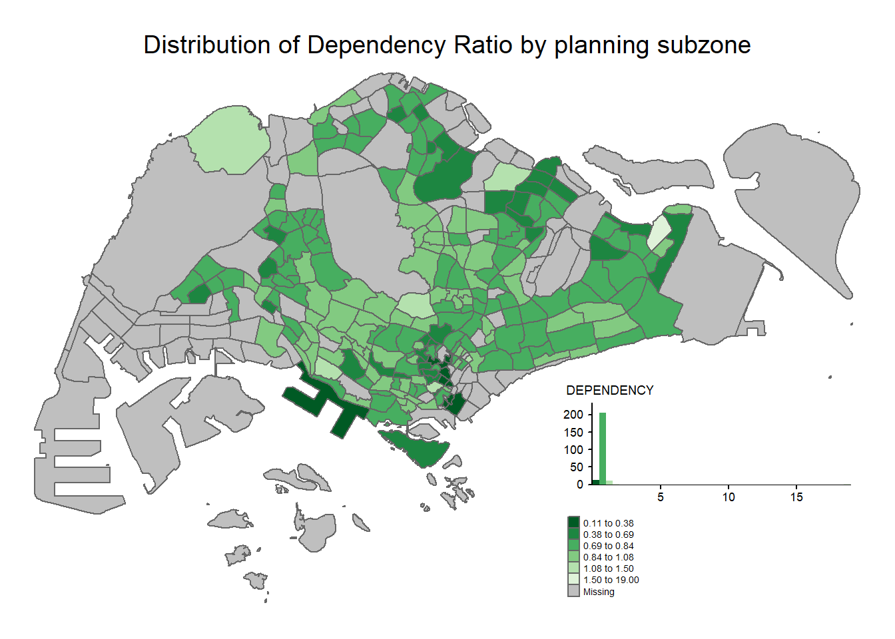
Using tmap_style
tm_shape(mpsz_pop2020)+
tm_fill('DEPENDENCY',
n = 6,
style = 'quantile',
palette = "-Greens")+
tm_borders(alpha = 0.5)+
tmap_style('classic')tmap style set to "classic"other available styles are: "white", "gray", "natural", "cobalt", "col_blind", "albatross", "beaver", "bw", "watercolor" 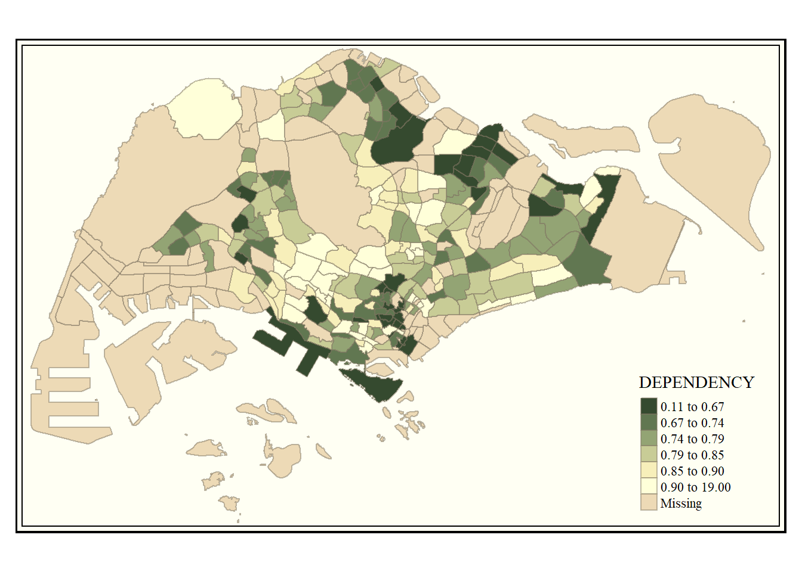
tm_compass(), tm_scale_bar() and tm_grid() are used to add compass, scale bar and grid lines onto the choropleth map
tm_shape(mpsz_pop2020)+
tm_fill('DEPENDENCY',
style = 'quantile',
palette = "Blues",
title = "No. of persons")+
tm_layout(main.title = "Distribution of Dependency Ratio by planning subzone",
main.title.position = "center",
main.title.size = 1.2,
legend.height = 0.4,
legend.width = 0.35,
legend.outside = FALSE,
legend.position = c('right','bottom'),
frame = FALSE)+
tm_borders(alpha = 0.5)+
tm_compass(type="8star", size = 2) +
tm_scale_bar(width = 0.15) +
tm_grid(lwd = 0.1, alpha = 0.2) +
tm_credits("Source: Planning Sub-zone boundary from Urban Redevelopment Authorithy (URA)\n and Population data from Department of Statistics DOS",
position = c("left", "bottom"))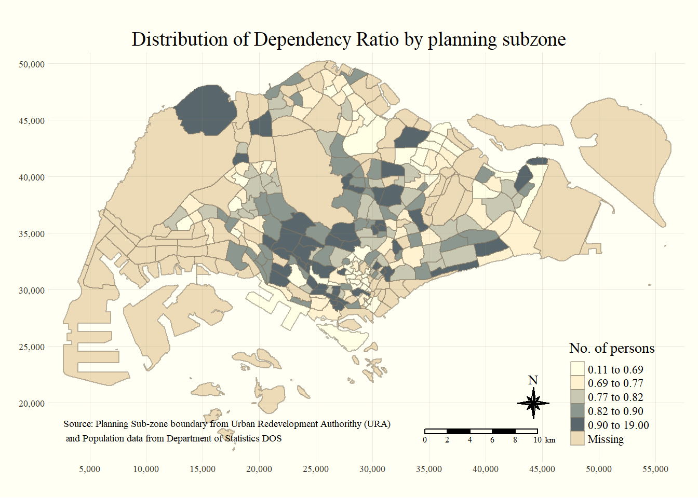
Reset tmap theme
tmap_style('white')tmap style set to "white"other available styles are: "gray", "natural", "cobalt", "col_blind", "albatross", "beaver", "bw", "classic", "watercolor" Small Multiple Choropleth Maps
By assigning multiple values to at least one of the aesthetic arguments
small multiple choropleth maps are created by defining ncols in tm_fill()
tm_shape(mpsz_pop2020)+
tm_fill(c("YOUNG", "AGED"),
style = "equal",
palette = "Blues") +
tm_layout(legend.position = c("right", "bottom")) +
tm_borders(alpha = 0.5) +
tmap_style("white")tmap style set to "white"other available styles are: "gray", "natural", "cobalt", "col_blind", "albatross", "beaver", "bw", "classic", "watercolor" 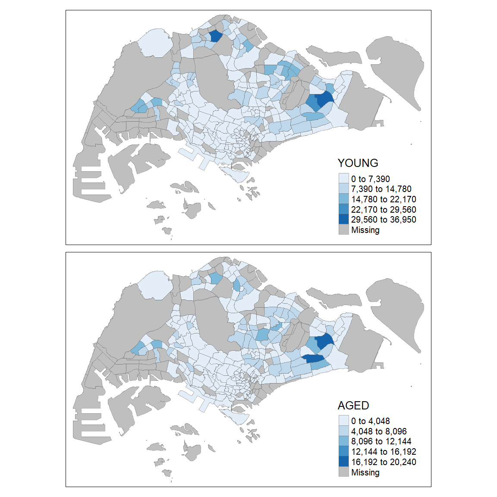
By assigning multiple values
tm_shape(mpsz_pop2020)+
tm_fill(c("DEPENDENCY", "AGED"),
style = c("equal","quantile"),
palette = list("Blues",'Greens')) +
tm_borders(alpha = 0.5) +
tm_layout(legend.position = c("right", "bottom")) 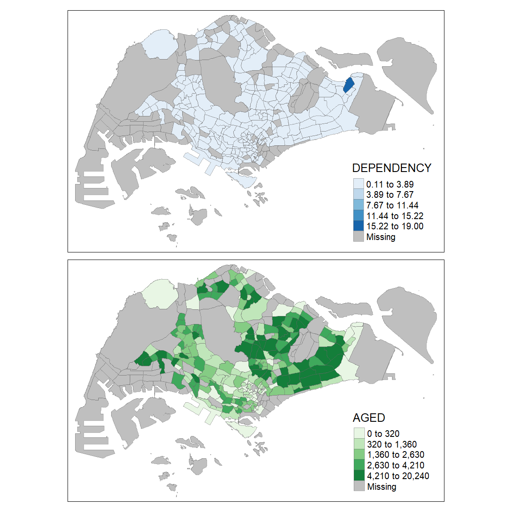
By defining a group-by variable in tm_facets()
style = ‘quantile’:the fill color will be determined based on quantiles of the values in the “DEPENDENCY” variable thres.poly = threshold of polygons, polygons with a “DEPENDENCY” value of 0 or below will not be shown on the map
tm_shape(mpsz_pop2020)+
tm_fill("DEPENDENCY",
style="quantile",
palette = "Blues",
thres.poly = 0) +
tm_facets(by = "REGION_N")+
tm_borders(alpha = 0.5) +
tm_layout(legend.show = FALSE,
title.position = c('center','center'),
title.size = 20) 
By creating multiple stand-alone maps with tmap_arrange()
young <- tm_shape(mpsz_pop2020)+
tm_polygons('YOUNG',style = 'quantile', palette = 'Blues')
old <- tm_shape(mpsz_pop2020)+
tm_polygons('AGED',style = 'quantile', palette = 'Blues')
tmap_arrange(young,old,asp = 1, ncol = 2)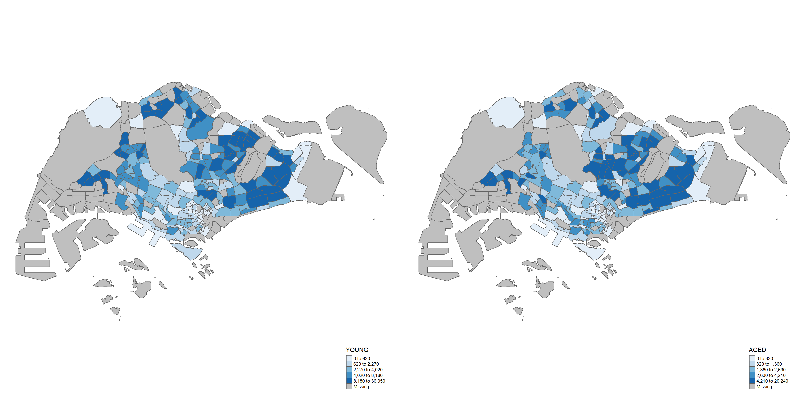
Mappping Spatial Object Meeting a Selection Criterion
need comma after “CENTRAL REGION” to subset rows based on a condition while keeping all columns
tm_shape(mpsz_pop2020[mpsz_pop2020$REGION_N=="CENTRAL REGION",])+
tm_fill("DEPENDENCY",
style = "quantile",
palette = "Blues",
legend.hist = TRUE,
legend.is.portrait = TRUE,
legend.hist.z = 0.1) +
tm_layout(legend.outside = TRUE,
legend.height = 0.45,
legend.width = 5.0,
legend.position = c("right", "bottom"),
frame = FALSE) +
tm_borders(alpha = 0.5)Warning in pre_process_gt(x, interactive = interactive, orig_crs =
gm$shape.orig_crs): legend.width controls the width of the legend within a map.
Please use legend.outside.size to control the width of the outside legend